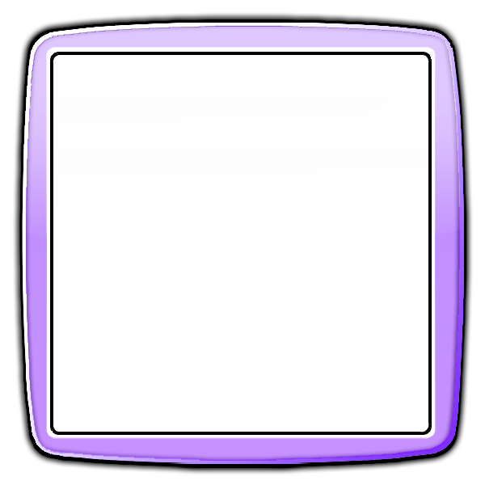

Sobre mim
Sou um entusiasta da programação, atualmente realizando o curso de Ciências da Computação e estagiando no Pincel Atômico. Sempre me vi na frente de um computador, mas foi em torno de 2020 que comecei a estudar de verdade algumas linguagens de programação e, por ser basicamente autodidata, aprendi Lua com foco em criar modificações pro GTA San Andreas (MTA). Foi nesse meio, também, que aprendi a gerenciar pessoas e projetos, além de configurar servidores FTP e banco de dados MySQL e SQLite. Sempre gostei de conhecer o "porquê" das coisas funcionarem, então minhas consultas e estudos iam cada vez mais pra um baixo nível. Dito isso, ao iniciar o ensino técnico em 2023, conheci um pouco mais da linguagens de baixo nível e me apaixonei por C++, adquirindo a vontade de saber mais de mais das suas funcionalidades e usos. Também foi no técnico que, por meio de projetos e palestras paralelas feitas em parceria com a instituição, que eu e minha namorada exploramos os mais diversos campos da tecnologia:
- Robótica (Arduino, ESPs, Lego Mindstorms NXT)
- CyberSegurança (M5StickC Plus 2; Ataques como phishing, evil-twin, jammer)
- Desenvolvimento Web (back-end, front-end, PHP)
- Banco de Dados (MySQL, SQLite)
- Impressão 3D
Atualmente trabalho com JS puro e PHP, mas ainda tenho vontade de voltar a estudar C++ e quem sabe automatizar diversas ações usando um hardware + software próprio :)
Informações adicionais


- Nome - Vitor Firme Sá
- Linguagem preferida - C++
- Foto de perfil - Feita em SVG pela Nath 💜
- S.O. atual - Windows 11
-